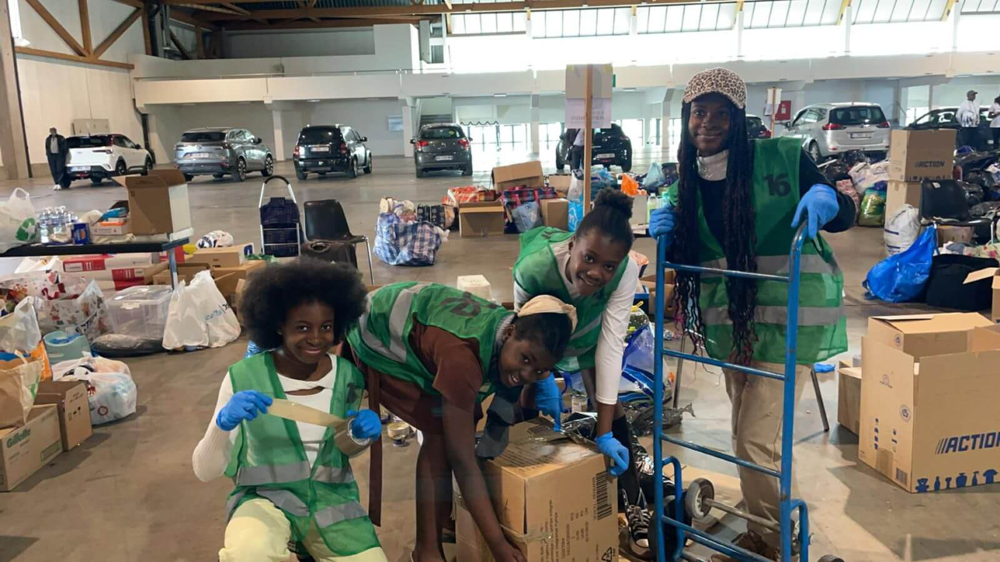
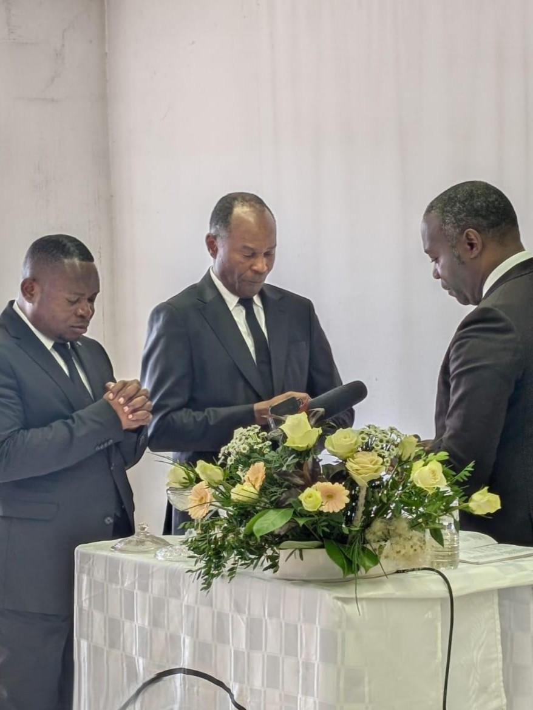
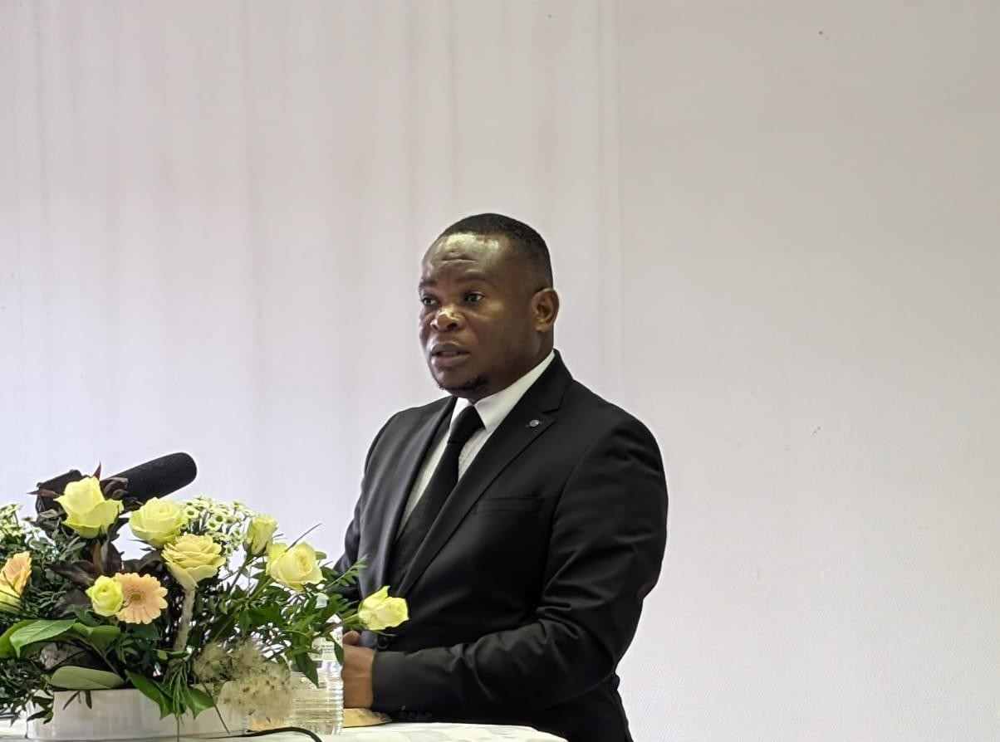
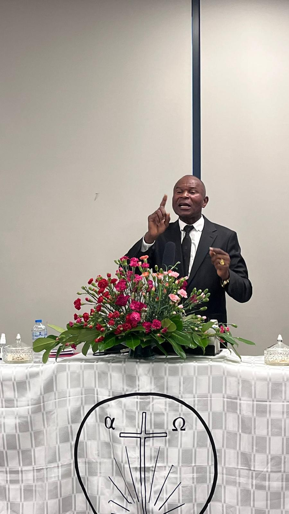
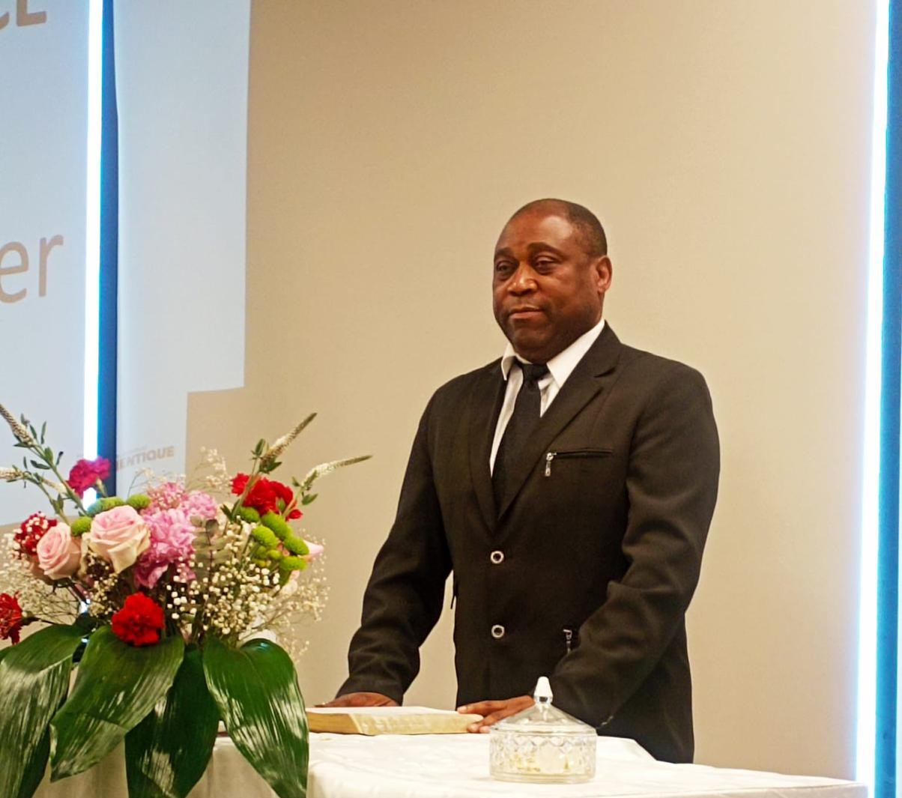

.png)
The New Authentic Apostolic Church — also known as ENAA — is a Christian community built on faith in Jesus Christ, the Word of God and the work of the Holy Spirit. It works for the spiritual edification of believers and the faithful proclamation of the Gospel, in a spirit of love, truth and unity.
Being Authentic means being faithful to the teaching of the new apostles in the continuity of the early Church. For Jesus built His Church upon the apostles, to whom He entrusted an important mission (Matthew 16:18, Ephesians 2:20 and John 20:21).
Authentic means true, faithful and true to the origin. Being authentic therefore means staying as faithful as possible to what the Bible teaches us. In the Authentic Church, we seek to be as faithful as possible to the Bible and to the teaching of Christ.
The New Authentic Apostolic Church envisions "a Church in which members daily experience love for God and for their neighbour, conform their conduct to the pure teaching of our Lord Jesus Christ through His apostles, and submit to the guidance of the Holy Spirit in order to be taken up by the Lord Jesus Christ at His coming."

With children at SOSGOMA, a social outreach in which the church participates to support the needs of the most vulnerable.
The New Authentic Apostolic Church's mission is: to go and proclaim the good news of salvation in its purity and authenticity to all Nations of the world, baptising them in the name of the Father, the Son and the Holy Spirit, proclaiming the forgiveness of sins and administering the sacraments of salvation, so as to bring all who believe to become part of the bride-church of Christ.

Apostle Patriarch
Apostle Patriarch Christophe Kabongo serves as the worldwide spiritual leader of the New Authentic Apostolic Church. Guided by deep devotion and an unwavering commitment to the purity of the Word, he leads the international community with wisdom and compassion.
His ministry is marked by a "yes" to the divine calling, working tirelessly for the unity of the bride-church and the preparation of souls for the coming of the Lord. Through his spiritual leadership, he carries the vision of ENAA forward, teaching and administering the sacraments for the salvation of the nations.

Western District

Administration

Brussels Representative

Brussels Priest
The church is structured to foster fellowship and spiritual care. It is led by an established ministry, working together with members to fulfil the mission of the Church.
Prayer is the heartbeat of our community. It is essential in our services, but also in our personal lives to maintain a living relationship with God.
Yes, we believe that God's love must be expressed in practical ways. We encourage our members to be agents of kindness in their communities and organise outreach activities.
Getting involved happens naturally by joining a sharing group, participating in services, or offering your specific talents to serve the community.
Our vision is to grow in spiritual maturity, welcome new people and share the Gospel meaningfully in our current society.
Yes, we offer youth activities, choir rehearsals and Bible sharing sessions during the week. Please contact us for more information.
You can contact us via the form on our website, by email at enauthentiquebelgique@gmail.com, or call +(32) 488 36 74 35 for any specific questions.

If you cannot be there in person, you can still take part in what God is doing. Join us online for our messages and divine service, wherever you are.
Sundays 10:00 AM (BE)
Watch live